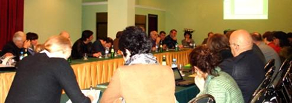

Роль образовательного сектора и активистов гражданского общества в предотвращении
и медиации конфликтов в южнокавказском регионе
С 27 ноября по 1 декабря 2009 года в Тбилиси при поддержке Министерства Иностранных Дел ФРГ и Немецкой Службы по Академическому Обмену (DAAD), отдела Восточноевропейской истории Института истории Университета Бонна и Научно-культурного Центра EuroKaukAsia состоялась международная конференция «Роль образовательного сектора и активистов гражданского общества в предотвращении и медиации конфликтов в Южно-кавказском регионе».
В работе конференции принимали участие академические ученые, преподаватели истории и обществоведения, журналисты, писатели, представители неправительственных, правозащитных и миротворческих организаций Азербайджана, Армении, Грузии, а также представители ряда международных организаций, находящихся в Тбилиси.
За время конференции были заслушаны доклады по трем темам:
1. Положение образовательной системы и состояние преподавания истории и обществоведения в странах Южного Кавказа;
2. Европейский и кавказский опыт создания совместных учебников по истории региона и обществоведению;
3. Проблемы и ресурсы интеграции миротворческих и правозащитных НПО и гражданских инициатив в странах Южного Кавказа.
Работа была продолжена в трех секциях, участники которых сосредоточились на практическом разрешении поставленных задач. Участники пришли к соглашению и договорились о конкретных шагах и возможном решении поставленных проблем, а также об организации и осуществлении совместной деятельности по мирному разрешению конфликтов на Южном Кавказе, укреплению мира в регионе.
По итогам конференции была достигнута договоренность о создании новой международной организационной структуры, призванной объединить представителей гражданского общества и образовательного сектора.
В работе конференции принимали участие академические ученые, преподаватели истории и обществоведения, журналисты, писатели, представители неправительственных, правозащитных и миротворческих организаций Азербайджана, Армении, Грузии, а также представители ряда международных организаций, находящихся в Тбилиси.
За время конференции были заслушаны доклады по трем темам:
1. Положение образовательной системы и состояние преподавания истории и обществоведения в странах Южного Кавказа;
2. Европейский и кавказский опыт создания совместных учебников по истории региона и обществоведению;
3. Проблемы и ресурсы интеграции миротворческих и правозащитных НПО и гражданских инициатив в странах Южного Кавказа.
Работа была продолжена в трех секциях, участники которых сосредоточились на практическом разрешении поставленных задач. Участники пришли к соглашению и договорились о конкретных шагах и возможном решении поставленных проблем, а также об организации и осуществлении совместной деятельности по мирному разрешению конфликтов на Южном Кавказе, укреплению мира в регионе.
По итогам конференции была достигнута договоренность о создании новой международной организационной структуры, призванной объединить представителей гражданского общества и образовательного сектора.